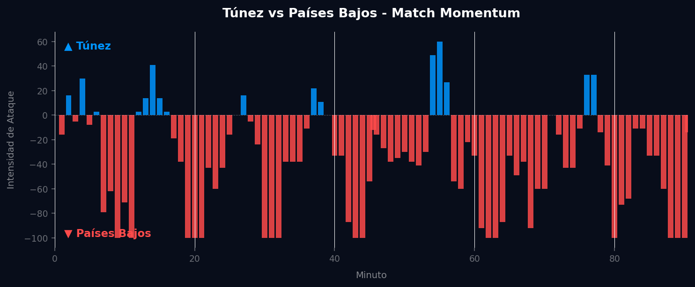
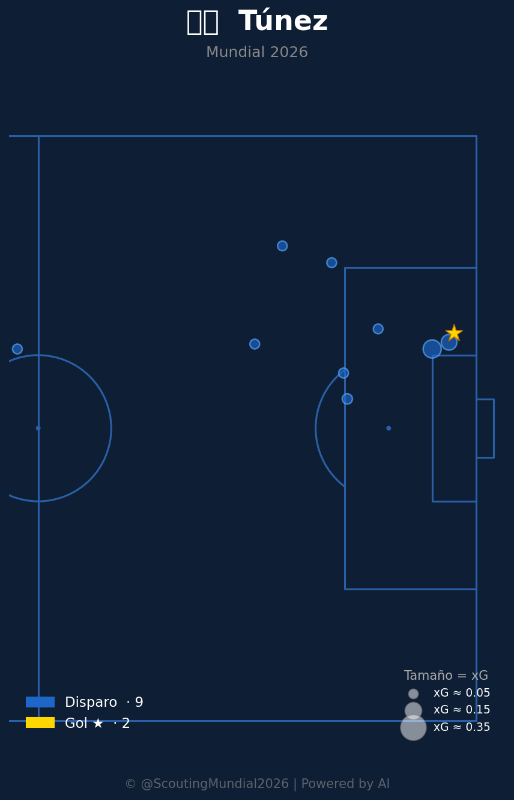

Grupo F
 Países Bajos
Países Bajos
Túnez vs Países Bajos
📅 2026-06-25 · 🕒 17:00 (Local)
Túnez

1 - 3
FINALIZADO
Países Bajos
📅 2026-06-25 · 🕒 17:00 (Local)
Países Bajos
El encuentro entre Túnez y Países Bajos, decisivo para el Grupo F del Mundial 2026, fue un claro reflejo de la disparidad esperada entre ambas selecciones. Los neerlandeses tomaron la iniciativa desde el pitido inicial, materializando su superioridad temprana con un gol de Cody Gakpo en el minuto 9, tras una fulminante combinación por la banda izquierda que desarmó la zaga tunecina. Memphis Depay amplió la ventaja para la Oranje antes del descanso, dejando un 2-0 en el marcador que reflejaba el control absoluto del juego. En la segunda mitad, Túnez mostró un destello de orgullo y valentía, logrando descontar en el minuto 55 a través de Youssef Msakni, quien capitalizó una de las pocas incursiones peligrosas de su equipo. Sin embargo, la reacción africana fue efímera; Países Bajos no tardaría en sofocar cualquier esperanza de remontada, sellando el 3-1 definitivo con un tanto de Denzel Dumfries en el minuto 78, asegurando así su pase a octavos de final con solvencia.
El análisis del Match Momentum revela una narrativa clara de dominio neerlandés. Países Bajos alcanzó su intensidad máxima (100.00) en el minuto 9, un pico que coincidió con el gol de Gakpo y que estableció el tono del partido, demostrando una voluntad explícita de asfixiar al rival desde el inicio. Esta dominancia se mantuvo constante a lo largo del encuentro, con los neerlandeses controlando el 79.3% de la intensidad de ataque total. Túnez, en contraste, solo logró imponerse en un 17.4% del tiempo, evidenciando su dificultad para generar fases ofensivas sostenidas. Su pico de intensidad (60.00) en el minuto 55, inmediatamente después de su gol, fue un momento de vitalidad que les permitió ilusionarse con una posible remontada, pero la diferencia en calidad y organización fue insalvable.
El Match Point de este encuentro se produjo en el minuto 78, con el tercer gol de Países Bajos. Tras el gol de Túnez en el 55', hubo un breve periodo donde la narrativa del partido podía haber girado. Sin embargo, la capacidad de la Oranje para recuperar el control y anotar el 3-1, aniquiló cualquier atisbo de esperanza para los africanos y selló definitivamente el resultado. Este gol no solo restauró la ventaja de dos tantos, sino que también desmoralizó a un Túnez que había invertido mucha energía en su reacción, confirmando la superioridad holandesa y la justicia del marcador final.

El planteamiento táctico de Túnez buscó la solidez defensiva y la velocidad en la transición, pero se vio rápidamente desbordado por la intensidad y el dinamismo de Países Bajos. Optaron por un bloque medio-bajo, intentando cerrar los espacios interiores y forzar a los neerlandeses a jugar por las bandas, sin éxito. El mediocampo tunecino, a pesar de su disciplina, sufrió para contener las triangulaciones y la movilidad de los interiores holandeses, lo que generó constantes desajustes en la línea defensiva. Su momento de mayor impacto, reflejado en el pico de intensidad del minuto 55, fue resultado de una mayor presión sobre la salida rival y una ejecución más precisa en una de sus pocas incursiones al área, demostrando que, con más iniciativa, podrían haber generado más peligro. Sin embargo, la falta de una estrategia ofensiva diversificada y la dificultad para retener la posesión les condenaron a un rol secundario.
Países Bajos ejecutó un plan de juego impecable, capitalizando su superioridad técnica y táctica. Su bloque, predominantemente ofensivo, se apoyó en una salida de balón limpia desde la defensa, con los carrileros actuando como válvulas de escape y desdoblamiento constante. La Oranje demostró una gran fluidez posicional en el mediocampo, con Frenkie de Jong dictando el ritmo y los atacantes moviéndose entre líneas para crear superioridades. La intensidad de su presión tras pérdida fue clave para recuperar rápidamente el balón y sostener su dominio, impidiendo que Túnez pudiera desarrollar contraataques coherentes. Las virtudes ofensivas se manifestaron en la diversidad de sus ataques, alternando juego por dentro con la explotación de la amplitud, lo que desestabilizó la estructura defensiva tunecina y les permitió generar múltiples oportunidades claras de gol desde el inicio.
El duelo táctico entre los entrenadores fue un claro reflejo de la jerarquía futbolística. El técnico neerlandés impuso su visión ofensiva y de control desde el primer minuto, dejando pocas opciones a su homólogo tunecino, cuyo plan inicial de contención se vio desbaratado por la intensidad y la calidad del rival. Mientras que Túnez mostró destellos de capacidad en su breve momento de reacción, Países Bajos gestionó el partido con madurez y contundencia, dosificando esfuerzos y golpeando en los momentos clave. El 3-1 final es un veredicto justo y contundente, que refleja fielmente la diferencia entre ambos equipos en el campo y la supremacía de la Oranje en todas las fases del juego.


